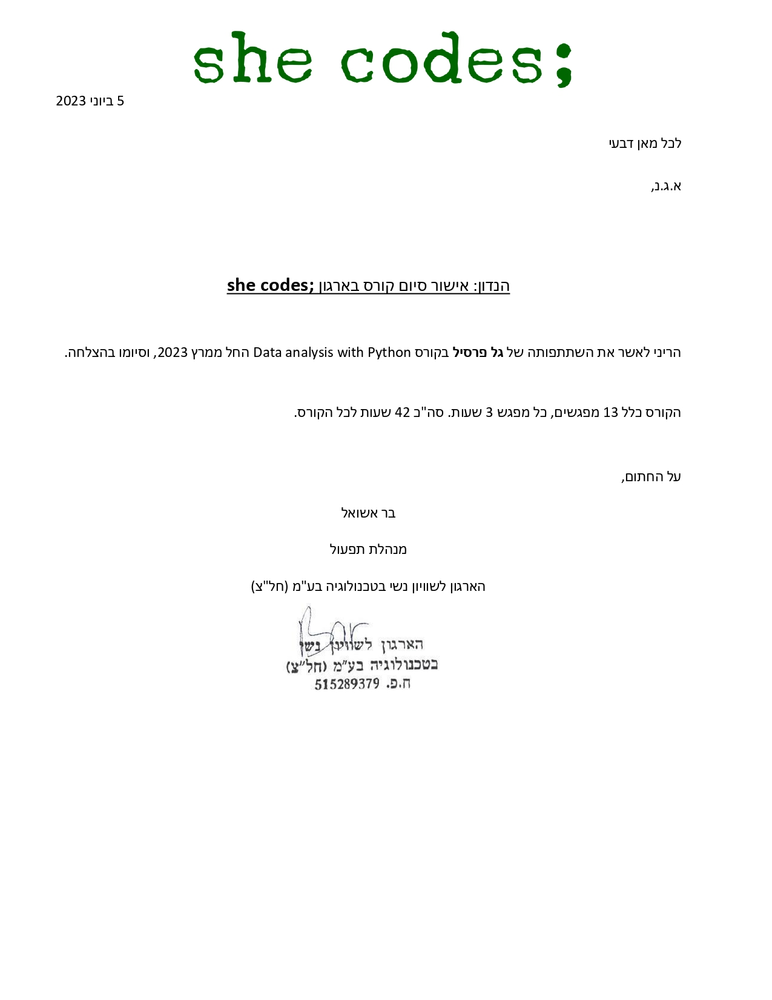

Hello, I'm Gal !
I’m Gal Presil, with experience in analytics and programminglooking for a new opportunity to apply my skills 💻✨
Python
SQL
JavaScript
HTML
CSS
Power BI
Machine Learning (NLP)
Git + GitHub
Microsoft Office
Network Administration
Project Management
Customer Service
Teamwork
Experience
Senior IT Manager & Team Leader
Jul 2018 - Present | Israeli Navy, Reserve Duty
- Certificate of Excellence in Reserve Duty from the Unit Commander (2024).
- Overseeing and coordinating IT activities and projects of the team.
- Providing user support and implementing communication networks.
- Management of the staff members' learning program.
IT Manager
Jul 2016 - Jul 2018 | Israeli Navy
- Certificate of Excellence from the Navy Commander (2018).
- Installation and configuring communication networks and systems at various sites.
- Training staff members and building a learning program and exams.
- Providing technical support and user management on military systems.
Projects
Sentiment Detection System of Opinions of Passengers Public Transportation - Academic Final Project
The project aimed to improve public transportation services using machine learning by developing
a website with a sentiment analysis algorithm and a dynamic dashboard.
This platform allows transportation companies to analyze customer opinions from social media,
providing valuable insights to enhance service quality.
🏆 First place in Afeka’s final project competition at the Industrial Engineering & Management
department.
Technologies -
Python (inc. Natural Language Processing) · SQL · Microsoft Power BI ·
JavaScript · CSS · HTML
HR Dashboard with Power BI
This project involves the creation of a three-page HR dashboard
using Power BI to enhance employee recruitment, satisfaction, and retention.
Power BI techniques -
Power Query · Data Modeling · DAX · Data Visualization
Dynamic Sales Dashboard and Search Form in Excel
This project involves creating an interactive Excel workbook
with two key components: a dynamic dashboard and a search form.
These tools, based on vehicles models sales data from Kaggle,
will offer a comprehensive data overview and simplify business management.
Excel tools -
Pivot Tables · Slicers · Sorting and Filtering ·
Formatting · Functions (including VLOOKUP)
Education
Afeka Tel Aviv Academic College of Engineering | 2019 - 2023
B.Sc. Industrial Engineering & Management
- Majors: Information Systems and Business Analytics.
- First place in Afeka’s final project competition at the Industrial Engineering & Management department (2023).
- Relevant Courses:
- Data Mining
- Cloud Data Engineering
- Data Structures and Algorithms (Python)
- Object-Oriented Programming
- Web Development
- Databases and Data-Warehouse Systems
- Human Computer Interaction (UX/UI)
- Project Management
ORT Givatayim High School | 2012 - 2016
High School Diploma, Computer Science
Certifications
Microsoft Power BI Desktop for Business Intelligence
Udemy

Data analysis with Python
she codes;
